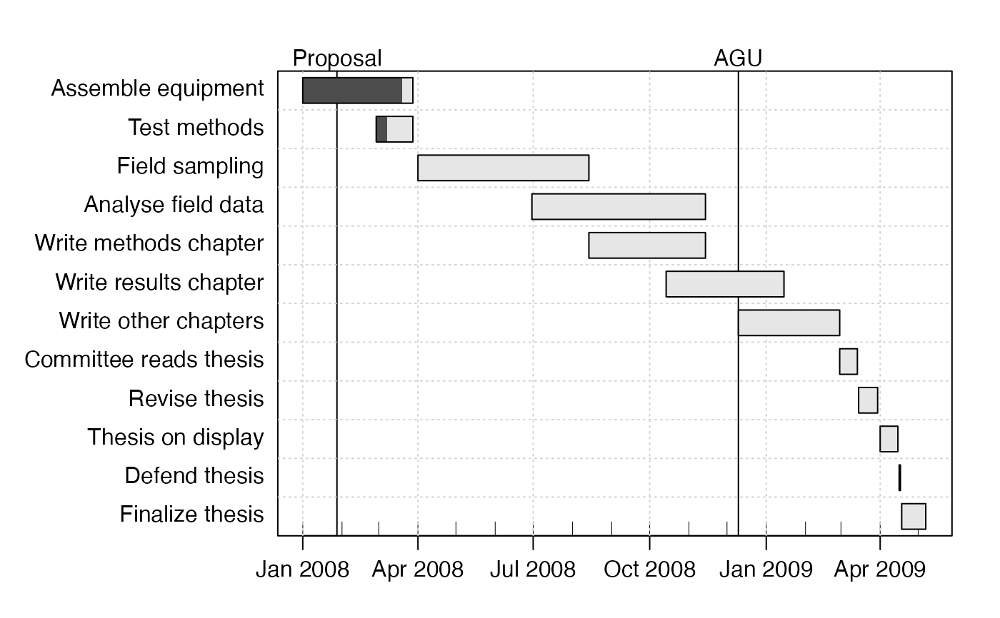
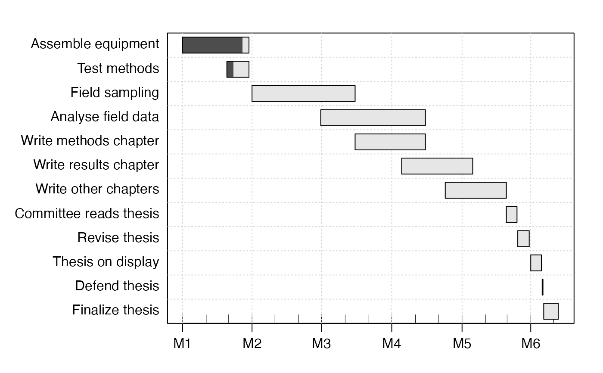
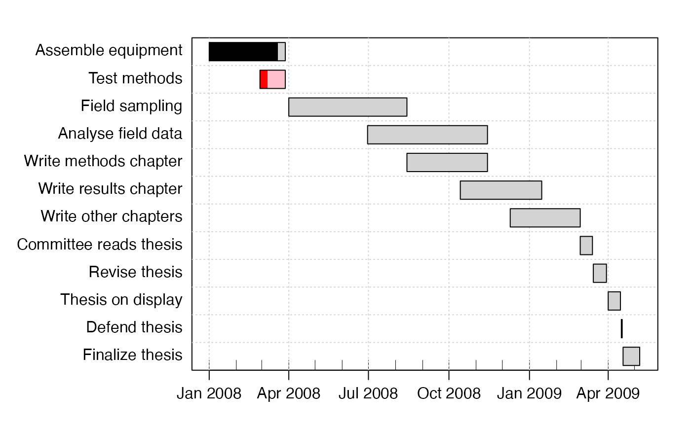
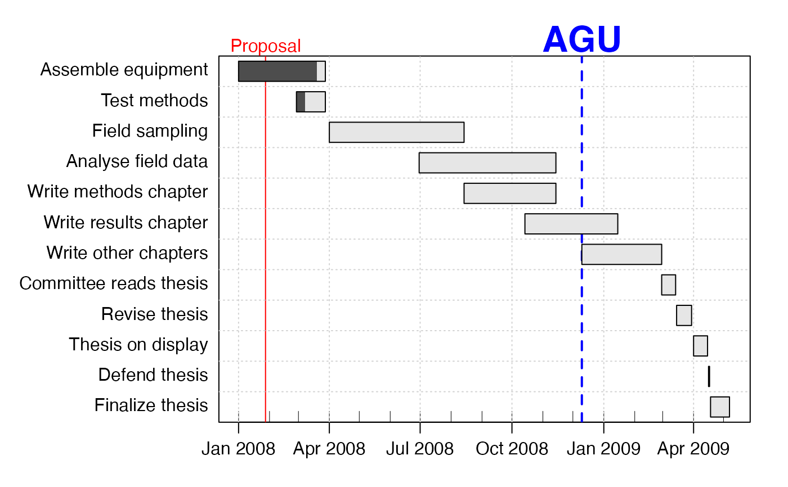
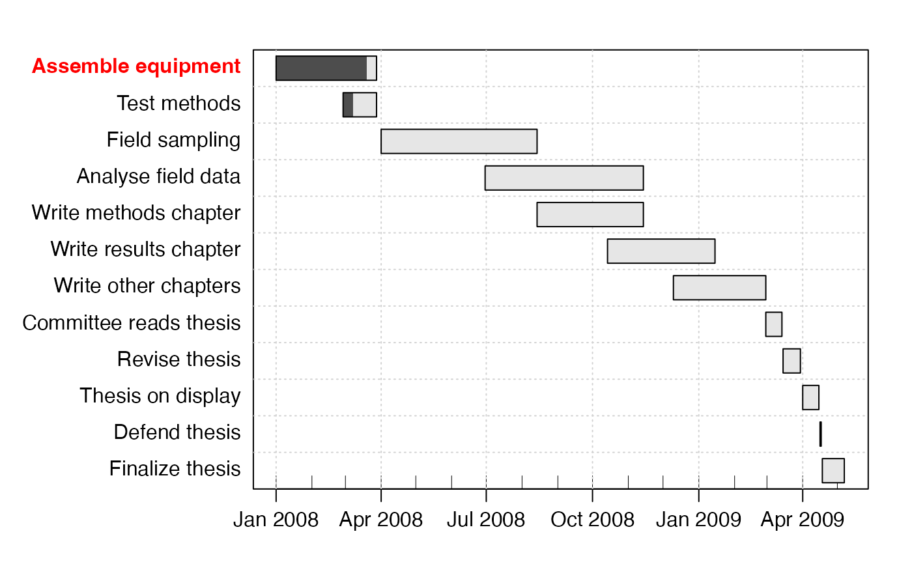
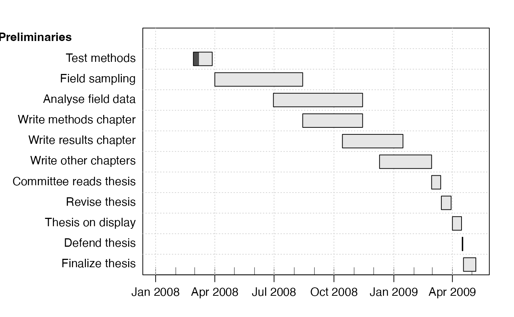
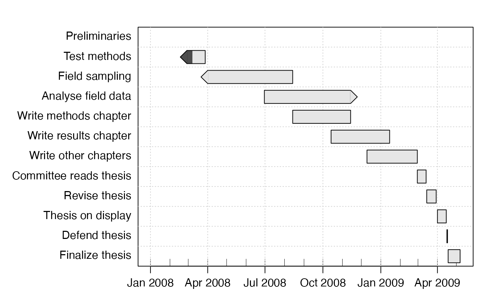

Plot a gantt chart that shows the time allocated to a set of tasks, optionally also with an indication of discrete events that occur as instants in time.
Usage
# S4 method for class 'gantt'
plot(
x,
xlim,
time.format = NULL,
time.labels.by,
time.lines.by,
event.time = NULL,
event.label = NULL,
event.side = 3,
col.connector = "black",
col.done = gray(0.3),
col.notdone = gray(0.9),
col.eventLine = gray(0.1),
col.event = par("fg"),
cex.event = par("cex"),
font.event = par("font"),
lty.eventLine = par("lty"),
lwd.eventLine = par("lwd"),
bg = par("bg"),
grid.col = "lightgray",
grid.lty = "dotted",
ylabels = list(col = 1, cex = 1, font = 1, justification = 1),
arrows = NULL,
main = "",
line.main = NA,
cex.main = par("cex"),
mgp = c(2, 0.7, 0),
maiAdd = rep(0, 4),
axes = TRUE,
debug = FALSE,
...
)Arguments
- x
A gantt object.
- xlim
optional range of time axis; if not provided, the range of times in
xwill be used.- time.format
format for dates on time axis; defaults to 3-letter month.
- time.labels.by
suggested label increment on time axis, e.g.
time.labels.by="2 months"to get a two-month interval. If not supplied, the axis will be generated automatically.- time.lines.by
suggested interval between vertical grid lines on the plot, e.g.
time.lines.by="1 week"for weekly. If not supplied, the grid will be generated automatically.- event.time
vector of event times, e.g. conferences, whose time cannot be altered.
- event.label
vector of character strings holding event names.
- event.side
side for event labels.
- col.connector
colour of (optional) connectors between items.
- col.done
colour of work that has been done already. This may be a vector of colours, one for each item in the gantt table.
- col.notdone
colour of work that has not been done yet. This may be a vector of colours, one for each item in the gantt table.
- col.eventLine
colour of event lines; may be a vector.
- col.event
colour of event labels; may be a vector.
- cex.event
expansion factor for event labels; may be a vector.
- font.event
font for event labels; may be a vector.
- lty.eventLine
line type for event lines; may be a vector.
- lwd.eventLine
line width for event lines; may be a vector.
- bg
background colour for plot.
- grid.col
colour for grid.
- grid.lty
line type for grid.
- ylabels
A list with elements
colfor colour,cexfor character-expansion factor,fontfor font, andjustificationfor the placement in the margin (0means left-justified, and1means right-justified. (Left-justification works poorly in RStudio, but properly in other systems.) It usually makes sense for the elements inylabelsto be vectors of the same length as the topic list. However, shorter vectors are permitted, and they lengthened by copying the default values at the end (see Example 6).- arrows
A vector of strings, one for each topic, indicating the nature of the arrows that may be drawn at the ends of task bars. The individual values may be
"left","right","both"or"neither". Setarrows=NULL, the default, to avoid such arrows.- main
character string to be used as chart title.
- line.main
line where title occurs. If
NA, then the title is placed in a default location; otherwise, it isline.mainlines above the top of the plot.- cex.main
numeric, font-size factor for title.
- mgp
setting for par
(mgp), within-axis spacing. The default value tightens axis spacing.- maiAdd
inches to add to the auto-computed margins at the bottom, left, top, and right margins. The values may be negative (to tighten margins) but the sum will be truncated to remain positive.
- axes
logical,
TRUEto draw the x axis. (Setting toFALSEpermits detailed axis tweaking.)- debug
logical value,
TRUEto monitor the work.- ...
extra things handed down.
Details
Time is indicated along the x axis, and tasks are stacked along the y axis, akin to progress bars. Colour-coding can be used to indicate the degree of completion of each task. These codes can be set individually for individual tasks. Progress bars can have arrows (on either end), suggesting tasks with flexible start/end dates or overdue tasks. Vertical lines may be drawn for discreet events. See “Examples” for a few of the possibilities.
See also
Other things related to gantt data:
as.gantt(),
gantt,
gantt-class,
ganttAddTask(),
read.gantt(),
summary,gantt-method
Examples
library(plan)
data(gantt)
summary(gantt)
#> Key, Description, Start, End, Done, NeededBy
#> 1, Assemble equipment, 2008-01-01, 2008-03-28, 90
#> 2, Test methods, 2008-02-28, 2008-03-28, 30
#> 3, Field sampling, 2008-04-01, 2008-08-14, 0
#> 4, Analyse field data, 2008-06-30, 2008-11-14, 0
#> 5, Write methods chapter, 2008-08-14, 2008-11-14, 0
#> 6, Write results chapter, 2008-10-14, 2009-01-15, 0
#> 7, Write other chapters, 2008-12-10, 2009-02-28, 0
#> 8, Committee reads thesis, 2009-02-28, 2009-03-14, 0
#> 9, Revise thesis, 2009-03-15, 2009-03-30, 0
#> 10, Thesis on display, 2009-04-01, 2009-04-15, 0
#> 11, Defend thesis, 2009-04-16, 2009-04-17, 0
#> 12, Finalize thesis, 2009-04-18, 2009-05-07, 0
# 1. Simple plot
plot(gantt)
# 2. Plot with two events
event.label <- c("Proposal", "AGU")
event.time <- c("2008-01-28", "2008-12-10")
plot(gantt, event.label = event.label, event.time = event.time)

# 3. Control x axis (months, say)
plot(gantt, labels = paste("M", 1:6, sep = ""))

# 4. Control task colours
plot(gantt,
col.done = c("black", "red", rep("black", 10)),
col.notdone = c("lightgray", "pink", rep("lightgray", 10))
)

# 5. Control event colours (garish, to illustrate)
plot(gantt,
event.time = event.time, event.label = event.label,
lwd.eventLine = 1:2, lty.eventLine = 1:2,
col.eventLine = c("pink", "lightblue"),
col.event = c("red", "blue"), font.event = 1:2, cex.event = 1:2
)

# 6. Top task is in bold font and red colour
plot(gantt, ylabels = list(col = "red", font = 2))

# 7. Demonstrate zero-time item (which becomes a heading)
gantt[["description"]][1] <- "Preliminaries"
gantt[["end"]][1] <- gantt[["start"]][1]
plot(gantt, ylabel = list(font = 2, justification = 0))

# 8. Arrows at task ends
plot(gantt, arrows = c("right", "left", "left", "right"))
